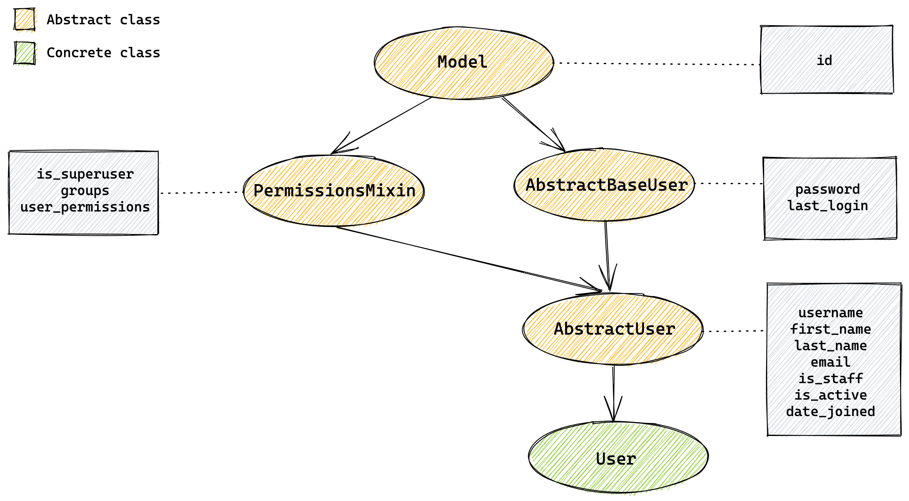
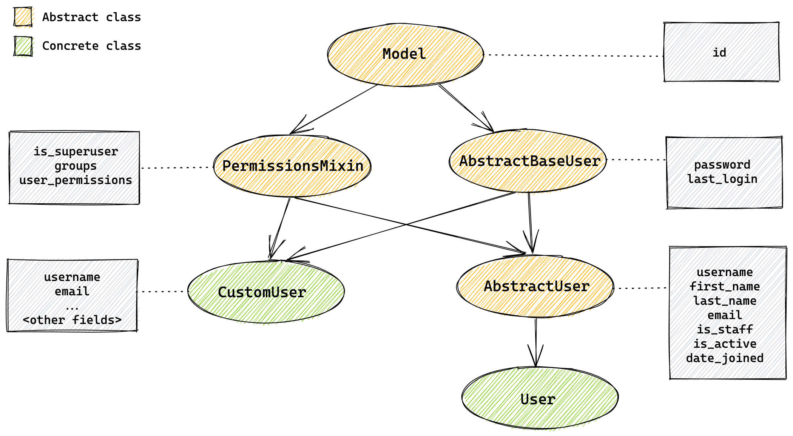
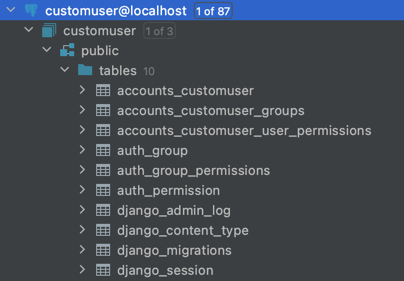

(Picture:
(Picture: The goal of this article is to discuss the caveats of the default Django user model implementation and also to give you some advice on how to address them. It is important to know the limitations of the current implementation so to avoid the most common pitfalls.
Something to keep in mind is that the Django user model is heavily based on its initial implementation that is at least 16 years old. Because user and authentication is a core part of the majority of the web applications using Django, most of its quirks persisted on the subsequent releases so to maintain backward compatibility.
The good news is that Django offers many ways to override and customize its default implementation so to fit your application needs. But some of those changes must be done right at the beginning of the project, otherwise it would be too much of a hassle to change the database structure after your application is in production.
Below, the topics that we are going to cover in this article:
- User Model Limitations
- The username field is case-sensitive
- The username field validates against unicode letters
- The email field is not unique
- The email field is not mandatory
- A user without password cannot initiate a password reset
- Swapping the default user model is very difficult after you created the initial migrations
- Detailed Solutions
- Conclusions
User Model Limitations
First, let’s explore the caveats and next we discuss the options.
The username field is case-sensitive
Even though the username field is marked as unique, by default it is not case-sensitive. That means the username
john.doe and John.doe identifies two different users in your application.
This can be a security issue if your application has social aspects that builds around the username providing a
public URL to a profile like Twitter, Instagram or GitHub for example.
It also delivers a poor user experience because people doesn’t expect that john.doe is a different username than
John.Doe, and if the user does not type the username exactly in the same way when they created their account, they
might be unable to log in to your application.
Possible Solutions:
- If you are using PostgreSQL, you can replace the username
CharFieldwith theCICharFieldinstead (which is case-insensitive) - You can override the method
get_by_natural_keyfrom theUserManagerto query the database usingiexact - Create a custom authentication backend based on the
ModelBackendimplementation
The username field validates against unicode letters
This is not necessarily an issue, but it is important for you to understand what that means and what are the effects.
By default the username field accepts letters, numbers and the characters: @, ., +, -, and _.
The catch here is on which letters it accepts.
For example, joão would be a valid username. Similarly, Джон or 約翰 would also be a valid username.
Django ships with two username validators: ASCIIUsernameValidator and UnicodeUsernameValidator. If the intended
behavior is to only accept letters from A-Z, you may want to switch the username validator to use ASCII letters only
by using the ASCIIUsernameValidator.
Possible Solutions:
- Replace the default user model and change the username validator to
ASCIIUsernameValidator - If you can’t replace the default user model, you can change the validator on the form you use to create/update the user
The email field is not unique
Multiple users can have the same email address associated with their account.
By default the email is used to recover a password. If there is more than one user with the same email address, the password reset will be initiated for all accounts and the user will receive an email for each active account.
It also may not be an issue but this will certainly make it impossible to offer the option to authenticate the user using the email address (like those sites that allow you to login with username or email address).
Possible Solutions:
- Replace the default user model using the
AbstractBaseUserto define the email field from scratch - If you can’t replace the user model, enforce the validation on the forms used to create/update
The email field is not mandatory
By default the email field does not allow null, however it allow blank values, so it pretty much allows users to
not inform a email address.
Also, this may not be an issue for your application. But if you intend to allow users to log in with email it may be a good idea to enforce the registration of this field.
When using the built-in resources like user creation forms or when using model forms you need to pay attention to this detail if the desired behavior is to always have the user email.
Possible Solutions:
- Replace the default user model using the
AbstractBaseUserto define the email field from scratch - If you can’t replace the user model, enforce the validation on the forms used to create/update
A user without password cannot initiate a password reset
There is a small catch on the user creation process that if the set_password method is called passing None as a
parameter, it will produce an unusable password. And that also means that the user will be unable to start a password
reset to set the first password.
You can end up in that situation if you are using social networks like Facebook or Twitter to allow the user to create an account on your website.
Another way of ending up in this situation is simply by creating a user using the User.objects.create_user() or
User.objects.create_superuser() without providing an initial password.
Possible Solutions:
- If in you user creation flow you allow users to get started without setting a password, remember to pass a random (and lengthy) initial password so the user can later on go through the password reset flow and set an initial password.
Swapping the default user model is very difficult after you created the initial migrations
Changing the user model is something you want to do early on. After your database schema is generated and your database is populated it will be very tricky to swap the user model.
The reason why is that you are likely going to have some foreign key created referencing the user table, also Django internal tables will create hard references to the user table. And if you plan to change that later on you will need to change and migrate the database by yourself.
Possible Solutions:
- Whenever you are starting a new Django project, always swap the default user model. Even if the default
implementation fit all your needs. You can simply extend the
AbstractUserand change a single configuration on the settings module. This will give you a tremendous freedom and it will make things way easier in the future should the requirements change.
Detailed Solutions
To address the limitations we discussed in this article we have two options: (1) implement workarounds to fix the behavior of the default user model; (2) replace the default user model altogether and fix the issues for good.
What is going to dictate what approach you need to use is in what stage your project currently is.
- If you have an existing project running in production that is using the default
django.contrib.auth.models.User, go with the first solution implementing the workarounds; - If you are just starting your Django, start with the right foot and go with the solution number 2.
Workarounds
First let’s have a look on a few workarounds that you can implement if you project is already in production. Keep in
mind that those solutions assume that you don’t have direct access to the User model, that is, you are currently using
the default User model importing it from django.contrib.auth.models.
If you did replace the User model, then jump to the next section to get better tips on how to fix the issues.
Making username field case-insensitive
Before making any changes you need to make sure you don’t have conflicting usernames on your database. For example,
if you have a User with the username maria and another with the username Maria you have to plan a data migration
first. It is difficult to tell you what to do because it really depends on how you want to handle it. One option is
to append some digits after the username, but that can disturb the user experience.
Now let’s say you checked your database and there are no conflicting usernames and you are good to go.
First thing you need to do is to protect your sign up forms to not allow conflicting usernames to create accounts.
Then on your user creation form, used to sign up, you could validate the username like this:
def clean_username(self):
username = self.cleaned_data.get("username")
if User.objects.filter(username__iexact=username).exists():
self.add_error("username", "A user with this username already exists.")
return usernameIf you are handling user creation in a rest API using DRF, you can do something similar in your serializer:
def validate_username(self, value):
if User.objects.filter(username__iexact=value).exists():
raise serializers.ValidationError("A user with this username already exists.")
return valueIn the previous example the mentioned ValidationError is the one defined in the DRF.
The iexact notation on the queryset parameter will query the database ignoring the case.
Now that the user creation is sanitized we can proceed to define a custom authentication backend.
Create a module named backends.py anywhere in your project and add the following snippet:
backends.py
from django.contrib.auth import get_user_model
from django.contrib.auth.backends import ModelBackend
class CaseInsensitiveModelBackend(ModelBackend):
def authenticate(self, request, username=None, password=None, **kwargs):
UserModel = get_user_model()
if username is None:
username = kwargs.get(UserModel.USERNAME_FIELD)
try:
case_insensitive_username_field = '{}__iexact'.format(UserModel.USERNAME_FIELD)
user = UserModel._default_manager.get(**{case_insensitive_username_field: username})
except UserModel.DoesNotExist:
# Run the default password hasher once to reduce the timing
# difference between an existing and a non-existing user (#20760).
UserModel().set_password(password)
else:
if user.check_password(password) and self.user_can_authenticate(user):
return userNow switch the authentication backend in the settings.py module:
settings.py
AUTHENTICATION_BACKENDS = ('mysite.core.backends.CaseInsensitiveModelBackend', )Please note that 'mysite.core.backends.CaseInsensitiveModelBackend' must be changed to the valid path, where you
created the backends.py module.
It is important to have handled all conflicting users before changing the authentication backend because otherwise it
could raise a 500 exception MultipleObjectsReturned.
Fixing the username validation to use accept ASCII letters only
Here we can borrow the built-in UsernameField and customize it to append the ASCIIUsernameValidator to the list of
validators:
from django.contrib.auth.forms import UsernameField
from django.contrib.auth.validators import ASCIIUsernameValidator
class ASCIIUsernameField(UsernameField):
def __init__(self, *args, **kwargs):
super().__init__(*args, **kwargs)
self.validators.append(ASCIIUsernameValidator())Then on the Meta of your User creation form you can replace the form field class:
class UserCreationForm(forms.ModelForm):
# field definitions...
class Meta:
model = User
fields = ("username",)
field_classes = {'username': ASCIIUsernameField}Fixing the email uniqueness and making it mandatory
Here all you can do is to sanitize and handle the user input in all views where you user can modify its email address.
You have to include the email field on your sign up form/serializer as well.
Then just make it mandatory like this:
class UserCreationForm(forms.ModelForm):
email = forms.EmailField(required=True)
# other field definitions...
class Meta:
model = User
fields = ("username",)
field_classes = {'username': ASCIIUsernameField}
def clean_email(self):
email = self.cleaned_data.get("email")
if User.objects.filter(email__iexact=email).exists():
self.add_error("email", _("A user with this email already exists."))
return emailYou can also check a complete and detailed example of this form on the project shared together with this post: userworkarounds
Replacing the default User model
Now I’m going to show you how I usually like to extend and replace the default User model. It is a little bit verbose but that is the strategy that will allow you to access all the inner parts of the User model and make it better.
To replace the User model you have two options: extending the AbstractBaseUser or extending the AbstractUser.
To illustrate what that means I draw the following diagram of how the default Django model is implemented:

The green circle identified with the label User is actually the one you import from django.contrib.auth.models and
that is the implementation that we discussed in this article.
If you look at the source code, its implementation looks like this:
class User(AbstractUser):
class Meta(AbstractUser.Meta):
swappable = 'AUTH_USER_MODEL'So basically it is just an implementation of the AbstractUser. Meaning all the fields and logic are implemented in the
abstract class.
It is done that way so we can easily extend the User model by creating a sub-class of the AbstractUser and add other
features and fields you like.
But there is a limitation that you can’t override an existing model field. For example, you can re-define the email field to make it mandatory or to change its length.
So extending the AbstractUser class is only useful when you want to modify its methods, add more fields or swap the
objects manager.
If you want to remove a field or change how the field is defined, you have to extend the user model from the
AbstractBaseUser.
The best strategy to have full control over the user model is creating a new concrete class from the PermissionsMixin
and the AbstractBaseUser.
Note that the PermissionsMixin is only necessary if you intend to use the Django admin or the built-in permissions
framework. If you are not planning to use it you can leave it out. And in the future if things change you can add
the mixin and migrate the model and you are ready to go.
So the implementation strategy looks like this:

Now I’m going to show you my go-to implementation. I always use PostgreSQL which, in my opinion, is the best database
to use with Django. At least it is the one with most support and features anyway. So I’m going to show an approach
that use the PostgreSQL’s CITextExtension. Then I will show some options if you are using other database engines.
For this implementation I always create an app named accounts:
django-admin startapp accountsThen before adding any code I like to create an empty migration to install the PostgreSQL extensions that we are going to use:
python manage.py makemigrations accounts --empty --name="postgres_extensions"Inside the migrations directory of the accounts app you will find an empty migration called
0001_postgres_extensions.py.
Modify the file to include the extension installation:
migrations/0001_postgres_extensions.py
from django.contrib.postgres.operations import CITextExtension
from django.db import migrations
class Migration(migrations.Migration):
dependencies = [
]
operations = [
CITextExtension()
]Now let’s implement our model. Open the models.py file inside the accounts app.
I always grab the initial code directly from Django’s source on GitHub, copying the AbstractUser implementation, and
modify it accordingly:
accounts/models.py
from django.contrib.auth.base_user import AbstractBaseUser
from django.contrib.auth.models import PermissionsMixin, UserManager
from django.contrib.auth.validators import ASCIIUsernameValidator
from django.contrib.postgres.fields import CICharField, CIEmailField
from django.core.mail import send_mail
from django.db import models
from django.utils import timezone
from django.utils.translation import gettext_lazy as _
class CustomUser(AbstractBaseUser, PermissionsMixin):
username_validator = ASCIIUsernameValidator()
username = CICharField(
_("username"),
max_length=150,
unique=True,
help_text=_("Required. 150 characters or fewer. Letters, digits and @/./+/-/_ only."),
validators=[username_validator],
error_messages={
"unique": _("A user with that username already exists."),
},
)
first_name = models.CharField(_("first name"), max_length=150, blank=True)
last_name = models.CharField(_("last name"), max_length=150, blank=True)
email = CIEmailField(
_("email address"),
unique=True,
error_messages={
"unique": _("A user with that email address already exists."),
},
)
is_staff = models.BooleanField(
_("staff status"),
default=False,
help_text=_("Designates whether the user can log into this admin site."),
)
is_active = models.BooleanField(
_("active"),
default=True,
help_text=_(
"Designates whether this user should be treated as active. Unselect this instead of deleting accounts."
),
)
date_joined = models.DateTimeField(_("date joined"), default=timezone.now)
objects = UserManager()
EMAIL_FIELD = "email"
USERNAME_FIELD = "username"
REQUIRED_FIELDS = ["email"]
class Meta:
verbose_name = _("user")
verbose_name_plural = _("users")
def clean(self):
super().clean()
self.email = self.__class__.objects.normalize_email(self.email)
def get_full_name(self):
"""
Return the first_name plus the last_name, with a space in between.
"""
full_name = "%s %s" % (self.first_name, self.last_name)
return full_name.strip()
def get_short_name(self):
"""Return the short name for the user."""
return self.first_name
def email_user(self, subject, message, from_email=None, **kwargs):
"""Send an email to this user."""
send_mail(subject, message, from_email, [self.email], **kwargs)Let’s review what we changed here:
- We switched the
username_validatorto useASCIIUsernameValidator - The
usernamefield now is usingCICharFieldwhich is not case-sensitive - The
emailfield is now mandatory, unique and is usingCIEmailFieldwhich is not case-sensitive
On the settings module, add the following configuration:
settings.py
AUTH_USER_MODEL = "accounts.CustomUser"Now we are ready to create our migrations:
python manage.py makemigrations Apply the migrations:
python manage.py migrateAnd you should get a similar result if you are just creating your project and if there is no other models/apps:
Operations to perform:
Apply all migrations: accounts, admin, auth, contenttypes, sessions
Running migrations:
Applying contenttypes.0001_initial... OK
Applying contenttypes.0002_remove_content_type_name... OK
Applying auth.0001_initial... OK
Applying auth.0002_alter_permission_name_max_length... OK
Applying auth.0003_alter_user_email_max_length... OK
Applying auth.0004_alter_user_username_opts... OK
Applying auth.0005_alter_user_last_login_null... OK
Applying auth.0006_require_contenttypes_0002... OK
Applying auth.0007_alter_validators_add_error_messages... OK
Applying auth.0008_alter_user_username_max_length... OK
Applying auth.0009_alter_user_last_name_max_length... OKIf you check your database scheme you will see that there is no auth_user table (which is the default one), and now
the user is stored on the table accounts_customuser:

And all the Foreign Keys to the user model will be created pointing to this table. That’s why it is important to do it right in the beginning of your project, before you created the database scheme.
Now you have all the freedom. You can replace the first_name and last_name and use just one field called name.
You could remove the username field and identify your User model with the email (then just make sure you change
the property USERNAME_FIELD to email).
You can grab the source code on GitHub: customuser
Handling case-insensitive without PostgreSQL
If you are not using PostgreSQL and want to implement case-insensitive authentication and you have direct access to the User model, a nice hack is to create a custom manager for the User model, like this:
accounts/models.py
from django.contrib.auth.models import AbstractUser, UserManager
class CustomUserManager(UserManager):
def get_by_natural_key(self, username):
case_insensitive_username_field = '{}__iexact'.format(self.model.USERNAME_FIELD)
return self.get(**{case_insensitive_username_field: username})
class CustomUser(AbstractBaseUser, PermissionsMixin):
# all the fields, etc...
objects = CustomUserManager()
# meta, methods, etc...Then you could also sanitize the username field on the clean() method to always save it as lowercase so you don’t have
to bother having case variant/conflicting usernames:
def clean(self):
super().clean()
self.email = self.__class__.objects.normalize_email(self.email)
self.username = self.username.lower()Conclusions
In this tutorial we discussed a few caveats of the default User model implementation and presented a few options to address those issues.
The takeaway message here is: always replace the default User model.
If your project is already in production, don’t panic: there are ways to fix those issues following the recommendations in this post.
I also have two detailed blog posts on how to make the username field case-insensitive and other about how to extend the django user model:
You can also explore the source code presented in this post on GitHub:
 How to Implement Multiple User Types with Django
How to Implement Multiple User Types with Django
 Django Tips #21 Using The Redirects App
Django Tips #21 Using The Redirects App
 How to Extend Django User Model
How to Extend Django User Model
 How to Setup a SSL Certificate on Nginx for a Django Application
How to Setup a SSL Certificate on Nginx for a Django Application
 How to Deploy a Django Application to Digital Ocean
How to Deploy a Django Application to Digital Ocean